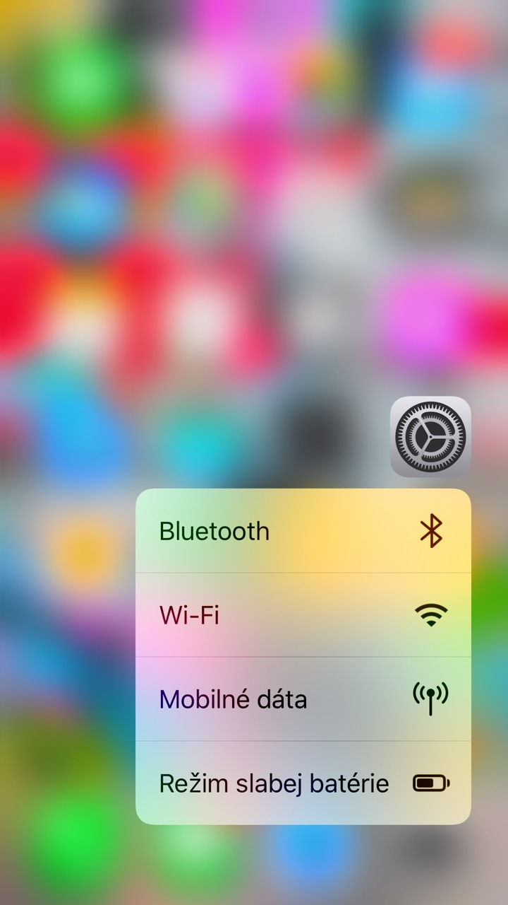

Force Touch
Extending past the multi-touch abilities of a touchscreen, Force Touch has a number of operations in Apple's software and hardware. Information such as reminders and dates can be pressed down with force to expand them so users can perform more actions more quickly, and applications developed for Apple's software can take advantage of Force Touch by implementing their own functions where Force Touch can be used.

Touch ID
Touch ID is built into the home button, which is built of laser-cut[8] sapphire crystal, and does not scratch easily (scratching would prevent Touch ID from working). It features a stainless steel detection ring to detect the user's finger without pressing it. There is no longer a rounded square icon in the home button, nor is it concave.

Facetime
FaceTime is a proprietary videotelephony product developed by Apple Inc. FaceTime is available on supported iOS mobile devices and Macintosh computers that run Mac OS X 10.6.6 and later. FaceTime supports any iOS device with a forward-facing camera and any Macintosh computer equipped with a FaceTime Camera.